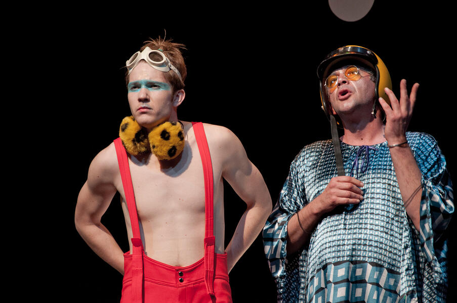

Premijera 8. oktobar 2019/Velika scena
Po delu Vilijama Šekspira u prevodu Aleksandra Petrovića
Reditelj: Kokan Mladenović
Adaptacija: Kokan Mladenović, Dimitrije Kokanov i Željko Hubač
Dramaturzi: Dimitrije Kokanov i Željko Hubač
Kostimografkinja: Bojana Nikitović
Scenografkinja: Marija Kalabić
Kompozitorka: Irena Popović Dragović
Scenski govor: Dejan Sredojević
Premijerna podela:
Upravnica Zatvora: Radmila Živković
Profesorka: Aleksandra Nikolić
Oberon: Dušanka Stojanović Glid
Titanija: Vanja Ejdus
Puk: Sanja Marković
Demetar: Marija Vicković
Helena: Nina Nešković
Lisander: Jovana Belović
Hermija: Isidora Simijonović
Egej: Ivana Šćepanović
Vratilo/Piram: Danijela Ugrenović
Zid: Lidija Pletl
Tizba: Vanja Milačić
Mesec: Bojana Bambić
Ministarka: Milena Đorđević
Asistentkinja reditelja: Nevena Mijatović
Asistentkinja kostimografkinje: Aleksandra Pecić
Asistent scenografkinje: Uroš Danilović
Producenti: Vuk Miletić i Jasmina Urošević
Suflerka: Danica Stevanović
* Studenti II godine pozorišne režije Fakulteta dramskih umetnosti , na praksi: Katarina Vještica, Iva Olujić, Đorđe Nešović, Nikola Bundalo
Majstor svetla:Milivoje Milivojević
Majstor maske: Marko Dukić
Majstor pozornice: Branko Perišić
Majstor tona: Perica Ćurković
Dekor i kostimi su izrađeni u radionicama Narodnog pozorišta u Beogradu